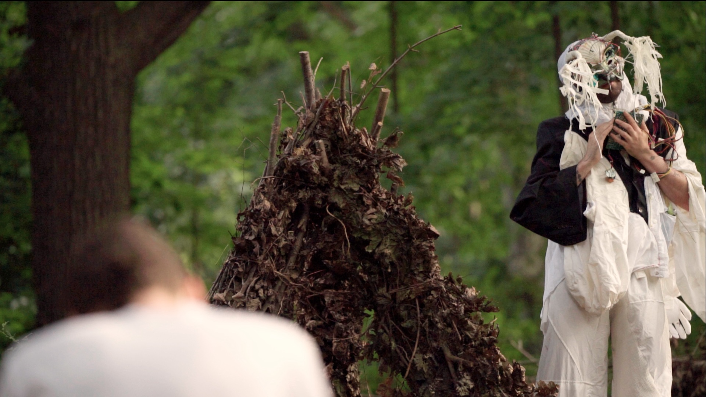
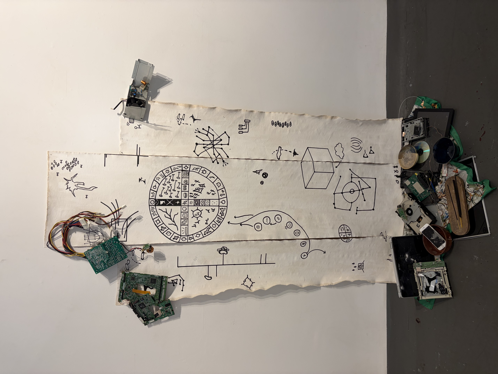
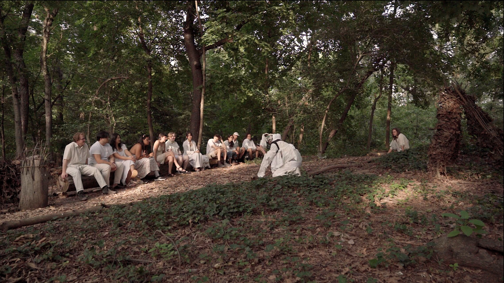
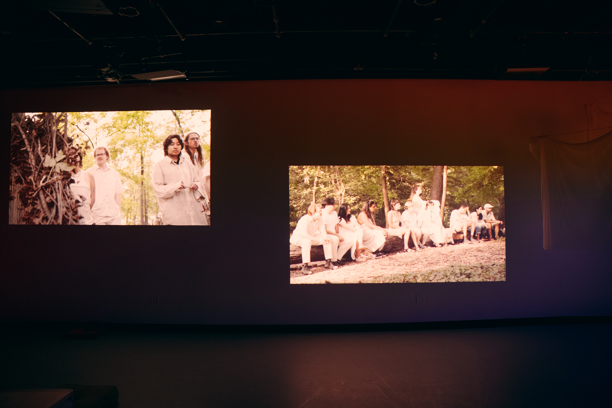

a creature, borne from the space between a data center and the earth. a spirit of circuits and clay. a cyborg.

following its birth under the full blue moon, the creature has been following its curiosities about how humans organize their sociotechnical lives.

it interrogates how data and generative AI are re-shaping our relationships to technology, to one another, and to the material world

resisting binaries of good/bad, the creature offers a new materiality by which we conceive of data. it is an alive data-being, an embodiment of the eerie emergence from collisions of technoscience and nature.

as a spirit of the earth, it communicates through archaic ritual means — it is playful, yet esoteric: a trickster god. it makes altars out of e-waste, nests in public space, middens of our enmeshed lives.

as a manifestation of the cyborgian landscape of contemporary experience and its weirding artifacts, the creature engages in a process of re-contextualizing public space as where land, data, and corporeality converge.

a newborn spirit, it learns through interaction with humans and technology. it continues to evolve into itself through appearances at protests, rituals, gatherings, and parties. how will you encounter it?

costume: Thistle Swann
mask: Olivia Tai
special thanks: Nick Plante, Amber Pedersen, Cece Oliver, Louison Sall
